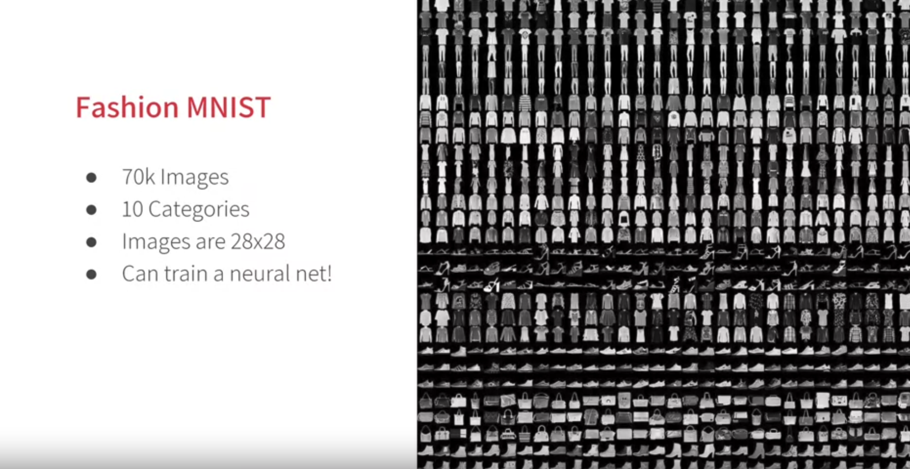

Code
import sys
print(sys.version)3.11.4 (v3.11.4:d2340ef257, Jun 6 2023, 19:15:51) [Clang 13.0.0 (clang-1300.0.29.30)]by Laurence Moroney
3.11.4 (v3.11.4:d2340ef257, Jun 6 2023, 19:15:51) [Clang 13.0.0 (clang-1300.0.29.30)]2.16.1
import numpy as np
import matplotlib.pyplot as plt
# You can put between 0 to 59999 here
index = 0
# Set number of characters per row when printing
np.set_printoptions(linewidth=320)
# Print the label and image
print(f'LABEL: {training_labels[index]}')
print(f'\nIMAGE PIXEL ARRAY:\n {training_images[index]}')LABEL: 9
IMAGE PIXEL ARRAY:
[[ 0 0 0 0 0 0 0 0 0 0 0 0 0 0 0 0 0 0 0 0 0 0 0 0 0 0 0 0]
[ 0 0 0 0 0 0 0 0 0 0 0 0 0 0 0 0 0 0 0 0 0 0 0 0 0 0 0 0]
[ 0 0 0 0 0 0 0 0 0 0 0 0 0 0 0 0 0 0 0 0 0 0 0 0 0 0 0 0]
[ 0 0 0 0 0 0 0 0 0 0 0 0 1 0 0 13 73 0 0 1 4 0 0 0 0 1 1 0]
[ 0 0 0 0 0 0 0 0 0 0 0 0 3 0 36 136 127 62 54 0 0 0 1 3 4 0 0 3]
[ 0 0 0 0 0 0 0 0 0 0 0 0 6 0 102 204 176 134 144 123 23 0 0 0 0 12 10 0]
[ 0 0 0 0 0 0 0 0 0 0 0 0 0 0 155 236 207 178 107 156 161 109 64 23 77 130 72 15]
[ 0 0 0 0 0 0 0 0 0 0 0 1 0 69 207 223 218 216 216 163 127 121 122 146 141 88 172 66]
[ 0 0 0 0 0 0 0 0 0 1 1 1 0 200 232 232 233 229 223 223 215 213 164 127 123 196 229 0]
[ 0 0 0 0 0 0 0 0 0 0 0 0 0 183 225 216 223 228 235 227 224 222 224 221 223 245 173 0]
[ 0 0 0 0 0 0 0 0 0 0 0 0 0 193 228 218 213 198 180 212 210 211 213 223 220 243 202 0]
[ 0 0 0 0 0 0 0 0 0 1 3 0 12 219 220 212 218 192 169 227 208 218 224 212 226 197 209 52]
[ 0 0 0 0 0 0 0 0 0 0 6 0 99 244 222 220 218 203 198 221 215 213 222 220 245 119 167 56]
[ 0 0 0 0 0 0 0 0 0 4 0 0 55 236 228 230 228 240 232 213 218 223 234 217 217 209 92 0]
[ 0 0 1 4 6 7 2 0 0 0 0 0 237 226 217 223 222 219 222 221 216 223 229 215 218 255 77 0]
[ 0 3 0 0 0 0 0 0 0 62 145 204 228 207 213 221 218 208 211 218 224 223 219 215 224 244 159 0]
[ 0 0 0 0 18 44 82 107 189 228 220 222 217 226 200 205 211 230 224 234 176 188 250 248 233 238 215 0]
[ 0 57 187 208 224 221 224 208 204 214 208 209 200 159 245 193 206 223 255 255 221 234 221 211 220 232 246 0]
[ 3 202 228 224 221 211 211 214 205 205 205 220 240 80 150 255 229 221 188 154 191 210 204 209 222 228 225 0]
[ 98 233 198 210 222 229 229 234 249 220 194 215 217 241 65 73 106 117 168 219 221 215 217 223 223 224 229 29]
[ 75 204 212 204 193 205 211 225 216 185 197 206 198 213 240 195 227 245 239 223 218 212 209 222 220 221 230 67]
[ 48 203 183 194 213 197 185 190 194 192 202 214 219 221 220 236 225 216 199 206 186 181 177 172 181 205 206 115]
[ 0 122 219 193 179 171 183 196 204 210 213 207 211 210 200 196 194 191 195 191 198 192 176 156 167 177 210 92]
[ 0 0 74 189 212 191 175 172 175 181 185 188 189 188 193 198 204 209 210 210 211 188 188 194 192 216 170 0]
[ 2 0 0 0 66 200 222 237 239 242 246 243 244 221 220 193 191 179 182 182 181 176 166 168 99 58 0 0]
[ 0 0 0 0 0 0 0 40 61 44 72 41 35 0 0 0 0 0 0 0 0 0 0 0 0 0 0 0]
[ 0 0 0 0 0 0 0 0 0 0 0 0 0 0 0 0 0 0 0 0 0 0 0 0 0 0 0 0]
[ 0 0 0 0 0 0 0 0 0 0 0 0 0 0 0 0 0 0 0 0 0 0 0 0 0 0 0 0]]You’ll notice that all of the values in the number are between 0 and 255. If you are training a neural network especially in image processing, for various reasons it will usually learn better if you scale all values to between 0 and 1. It’s a process called normalization and fortunately in Python, it’s easy to normalize an array without looping. You do it like this:
Sequential: That defines a sequence of layers in the neural network.
Flatten: Remember earlier where our images were a 28x28 pixel matrix when you printed them out? Flatten just takes that square and turns it into a 1-dimensional array.
Dense: Adds a layer of neurons
Each layer of neurons need an activation function to tell them what to do. There are a lot of options, but just use these for now:
ReLU effectively means:
if x > 0: return x
else: return 0
Softmax takes a list of values and scales these so the sum of all elements will be equal to 1
Model: "sequential"
┏━━━━━━━━━━━━━━━━━━━━━━━━━━━━━━━━━┳━━━━━━━━━━━━━━━━━━━━━━━━┳━━━━━━━━━━━━━━━┓ ┃ Layer (type) ┃ Output Shape ┃ Param # ┃ ┡━━━━━━━━━━━━━━━━━━━━━━━━━━━━━━━━━╇━━━━━━━━━━━━━━━━━━━━━━━━╇━━━━━━━━━━━━━━━┩ │ flatten (Flatten) │ ? │ 0 (unbuilt) │ ├─────────────────────────────────┼────────────────────────┼───────────────┤ │ dense (Dense) │ ? │ 0 (unbuilt) │ ├─────────────────────────────────┼────────────────────────┼───────────────┤ │ dense_1 (Dense) │ ? │ 0 (unbuilt) │ └─────────────────────────────────┴────────────────────────┴───────────────┘
Total params: 0 (0.00 B)
Trainable params: 0 (0.00 B)
Non-trainable params: 0 (0.00 B)
class myCallback(tf.keras.callbacks.Callback):
def on_epoch_end(self, epoch, logs={}):
'''
Halts the training when the loss falls below 0.4
Args:
epoch (integer) - index of epoch (required but unused in the function definition below)
logs (dict) - metric results from the training epoch
'''
# Check the loss
if(logs.get('loss') < 0.3):
# Stop if threshold is met
print("\nLoss is lower than 0.4 so cancelling training!")
print("cancelling training with:")
print(epoch+1)
self.model.stop_training = True
# Instantiate class
callbacks = myCallback()Epoch 1/10
1/1875 ━━━━━━━━━━━━━━━━━━━━ 7:25 238ms/step - accuracy: 0.0938 - loss: 2.4555 86/1875 ━━━━━━━━━━━━━━━━━━━━ 1s 592us/step - accuracy: 0.5677 - loss: 1.2886 167/1875 ━━━━━━━━━━━━━━━━━━━━ 1s 606us/step - accuracy: 0.6333 - loss: 1.0827 249/1875 ━━━━━━━━━━━━━━━━━━━━ 0s 609us/step - accuracy: 0.6678 - loss: 0.9772 331/1875 ━━━━━━━━━━━━━━━━━━━━ 0s 610us/step - accuracy: 0.6896 - loss: 0.9106 412/1875 ━━━━━━━━━━━━━━━━━━━━ 0s 611us/step - accuracy: 0.7047 - loss: 0.8639 496/1875 ━━━━━━━━━━━━━━━━━━━━ 0s 610us/step - accuracy: 0.7166 - loss: 0.8271 580/1875 ━━━━━━━━━━━━━━━━━━━━ 0s 608us/step - accuracy: 0.7261 - loss: 0.7980 663/1875 ━━━━━━━━━━━━━━━━━━━━ 0s 608us/step - accuracy: 0.7340 - loss: 0.7741 746/1875 ━━━━━━━━━━━━━━━━━━━━ 0s 608us/step - accuracy: 0.7407 - loss: 0.7540 828/1875 ━━━━━━━━━━━━━━━━━━━━ 0s 609us/step - accuracy: 0.7465 - loss: 0.7366 909/1875 ━━━━━━━━━━━━━━━━━━━━ 0s 609us/step - accuracy: 0.7514 - loss: 0.7217 991/1875 ━━━━━━━━━━━━━━━━━━━━ 0s 610us/step - accuracy: 0.7558 - loss: 0.70831073/1875 ━━━━━━━━━━━━━━━━━━━━ 0s 610us/step - accuracy: 0.7597 - loss: 0.69641154/1875 ━━━━━━━━━━━━━━━━━━━━ 0s 611us/step - accuracy: 0.7633 - loss: 0.68581236/1875 ━━━━━━━━━━━━━━━━━━━━ 0s 611us/step - accuracy: 0.7666 - loss: 0.67591319/1875 ━━━━━━━━━━━━━━━━━━━━ 0s 611us/step - accuracy: 0.7696 - loss: 0.66671402/1875 ━━━━━━━━━━━━━━━━━━━━ 0s 611us/step - accuracy: 0.7724 - loss: 0.65821484/1875 ━━━━━━━━━━━━━━━━━━━━ 0s 611us/step - accuracy: 0.7750 - loss: 0.65041565/1875 ━━━━━━━━━━━━━━━━━━━━ 0s 611us/step - accuracy: 0.7773 - loss: 0.64321647/1875 ━━━━━━━━━━━━━━━━━━━━ 0s 611us/step - accuracy: 0.7796 - loss: 0.63651729/1875 ━━━━━━━━━━━━━━━━━━━━ 0s 611us/step - accuracy: 0.7816 - loss: 0.63011811/1875 ━━━━━━━━━━━━━━━━━━━━ 0s 611us/step - accuracy: 0.7836 - loss: 0.62431875/1875 ━━━━━━━━━━━━━━━━━━━━ 1s 612us/step - accuracy: 0.7850 - loss: 0.6199
Epoch 2/10
1/1875 ━━━━━━━━━━━━━━━━━━━━ 15s 8ms/step - accuracy: 0.8750 - loss: 0.4051 84/1875 ━━━━━━━━━━━━━━━━━━━━ 1s 606us/step - accuracy: 0.8529 - loss: 0.4055 168/1875 ━━━━━━━━━━━━━━━━━━━━ 1s 603us/step - accuracy: 0.8536 - loss: 0.4031 254/1875 ━━━━━━━━━━━━━━━━━━━━ 0s 598us/step - accuracy: 0.8540 - loss: 0.4004 338/1875 ━━━━━━━━━━━━━━━━━━━━ 0s 597us/step - accuracy: 0.8537 - loss: 0.3993 422/1875 ━━━━━━━━━━━━━━━━━━━━ 0s 598us/step - accuracy: 0.8541 - loss: 0.3973 506/1875 ━━━━━━━━━━━━━━━━━━━━ 0s 598us/step - accuracy: 0.8545 - loss: 0.3961 590/1875 ━━━━━━━━━━━━━━━━━━━━ 0s 597us/step - accuracy: 0.8550 - loss: 0.3947 675/1875 ━━━━━━━━━━━━━━━━━━━━ 0s 596us/step - accuracy: 0.8555 - loss: 0.3935 760/1875 ━━━━━━━━━━━━━━━━━━━━ 0s 596us/step - accuracy: 0.8560 - loss: 0.3922 843/1875 ━━━━━━━━━━━━━━━━━━━━ 0s 597us/step - accuracy: 0.8564 - loss: 0.3912 927/1875 ━━━━━━━━━━━━━━━━━━━━ 0s 597us/step - accuracy: 0.8568 - loss: 0.39031013/1875 ━━━━━━━━━━━━━━━━━━━━ 0s 597us/step - accuracy: 0.8571 - loss: 0.38941097/1875 ━━━━━━━━━━━━━━━━━━━━ 0s 597us/step - accuracy: 0.8574 - loss: 0.38851181/1875 ━━━━━━━━━━━━━━━━━━━━ 0s 597us/step - accuracy: 0.8577 - loss: 0.38771265/1875 ━━━━━━━━━━━━━━━━━━━━ 0s 597us/step - accuracy: 0.8580 - loss: 0.38701349/1875 ━━━━━━━━━━━━━━━━━━━━ 0s 597us/step - accuracy: 0.8582 - loss: 0.38631433/1875 ━━━━━━━━━━━━━━━━━━━━ 0s 598us/step - accuracy: 0.8585 - loss: 0.38581518/1875 ━━━━━━━━━━━━━━━━━━━━ 0s 597us/step - accuracy: 0.8586 - loss: 0.38531602/1875 ━━━━━━━━━━━━━━━━━━━━ 0s 597us/step - accuracy: 0.8588 - loss: 0.38491686/1875 ━━━━━━━━━━━━━━━━━━━━ 0s 598us/step - accuracy: 0.8590 - loss: 0.38451771/1875 ━━━━━━━━━━━━━━━━━━━━ 0s 597us/step - accuracy: 0.8591 - loss: 0.38421856/1875 ━━━━━━━━━━━━━━━━━━━━ 0s 597us/step - accuracy: 0.8593 - loss: 0.38381875/1875 ━━━━━━━━━━━━━━━━━━━━ 1s 598us/step - accuracy: 0.8593 - loss: 0.3838
Epoch 3/10
1/1875 ━━━━━━━━━━━━━━━━━━━━ 15s 9ms/step - accuracy: 0.8750 - loss: 0.3526 84/1875 ━━━━━━━━━━━━━━━━━━━━ 1s 606us/step - accuracy: 0.8907 - loss: 0.3048 167/1875 ━━━━━━━━━━━━━━━━━━━━ 1s 604us/step - accuracy: 0.8882 - loss: 0.3091 251/1875 ━━━━━━━━━━━━━━━━━━━━ 0s 602us/step - accuracy: 0.8862 - loss: 0.3142 335/1875 ━━━━━━━━━━━━━━━━━━━━ 0s 602us/step - accuracy: 0.8847 - loss: 0.3182 417/1875 ━━━━━━━━━━━━━━━━━━━━ 0s 604us/step - accuracy: 0.8836 - loss: 0.3208 500/1875 ━━━━━━━━━━━━━━━━━━━━ 0s 604us/step - accuracy: 0.8827 - loss: 0.3226 583/1875 ━━━━━━━━━━━━━━━━━━━━ 0s 605us/step - accuracy: 0.8820 - loss: 0.3241 666/1875 ━━━━━━━━━━━━━━━━━━━━ 0s 605us/step - accuracy: 0.8815 - loss: 0.3250 750/1875 ━━━━━━━━━━━━━━━━━━━━ 0s 605us/step - accuracy: 0.8811 - loss: 0.3257 834/1875 ━━━━━━━━━━━━━━━━━━━━ 0s 604us/step - accuracy: 0.8808 - loss: 0.3263 917/1875 ━━━━━━━━━━━━━━━━━━━━ 0s 605us/step - accuracy: 0.8805 - loss: 0.32691001/1875 ━━━━━━━━━━━━━━━━━━━━ 0s 604us/step - accuracy: 0.8801 - loss: 0.32761087/1875 ━━━━━━━━━━━━━━━━━━━━ 0s 603us/step - accuracy: 0.8798 - loss: 0.32831170/1875 ━━━━━━━━━━━━━━━━━━━━ 0s 603us/step - accuracy: 0.8795 - loss: 0.32881253/1875 ━━━━━━━━━━━━━━━━━━━━ 0s 603us/step - accuracy: 0.8793 - loss: 0.32921336/1875 ━━━━━━━━━━━━━━━━━━━━ 0s 603us/step - accuracy: 0.8792 - loss: 0.32951418/1875 ━━━━━━━━━━━━━━━━━━━━ 0s 603us/step - accuracy: 0.8791 - loss: 0.32981501/1875 ━━━━━━━━━━━━━━━━━━━━ 0s 603us/step - accuracy: 0.8790 - loss: 0.33001585/1875 ━━━━━━━━━━━━━━━━━━━━ 0s 603us/step - accuracy: 0.8789 - loss: 0.33021669/1875 ━━━━━━━━━━━━━━━━━━━━ 0s 603us/step - accuracy: 0.8788 - loss: 0.33031754/1875 ━━━━━━━━━━━━━━━━━━━━ 0s 602us/step - accuracy: 0.8788 - loss: 0.33041837/1875 ━━━━━━━━━━━━━━━━━━━━ 0s 602us/step - accuracy: 0.8787 - loss: 0.33061875/1875 ━━━━━━━━━━━━━━━━━━━━ 1s 603us/step - accuracy: 0.8787 - loss: 0.3306
Epoch 4/10
1/1875 ━━━━━━━━━━━━━━━━━━━━ 15s 9ms/step - accuracy: 0.8750 - loss: 0.3010 85/1875 ━━━━━━━━━━━━━━━━━━━━ 1s 597us/step - accuracy: 0.8804 - loss: 0.3106 169/1875 ━━━━━━━━━━━━━━━━━━━━ 1s 599us/step - accuracy: 0.8790 - loss: 0.3170 253/1875 ━━━━━━━━━━━━━━━━━━━━ 0s 600us/step - accuracy: 0.8797 - loss: 0.3186 336/1875 ━━━━━━━━━━━━━━━━━━━━ 0s 601us/step - accuracy: 0.8810 - loss: 0.3172 420/1875 ━━━━━━━━━━━━━━━━━━━━ 0s 600us/step - accuracy: 0.8818 - loss: 0.3166 504/1875 ━━━━━━━━━━━━━━━━━━━━ 0s 600us/step - accuracy: 0.8825 - loss: 0.3163 588/1875 ━━━━━━━━━━━━━━━━━━━━ 0s 600us/step - accuracy: 0.8830 - loss: 0.3157 672/1875 ━━━━━━━━━━━━━━━━━━━━ 0s 600us/step - accuracy: 0.8836 - loss: 0.3150 757/1875 ━━━━━━━━━━━━━━━━━━━━ 0s 599us/step - accuracy: 0.8840 - loss: 0.3146 841/1875 ━━━━━━━━━━━━━━━━━━━━ 0s 598us/step - accuracy: 0.8842 - loss: 0.3144 925/1875 ━━━━━━━━━━━━━━━━━━━━ 0s 599us/step - accuracy: 0.8843 - loss: 0.31421011/1875 ━━━━━━━━━━━━━━━━━━━━ 0s 598us/step - accuracy: 0.8844 - loss: 0.31391095/1875 ━━━━━━━━━━━━━━━━━━━━ 0s 598us/step - accuracy: 0.8845 - loss: 0.31371180/1875 ━━━━━━━━━━━━━━━━━━━━ 0s 597us/step - accuracy: 0.8847 - loss: 0.31351264/1875 ━━━━━━━━━━━━━━━━━━━━ 0s 597us/step - accuracy: 0.8848 - loss: 0.31321349/1875 ━━━━━━━━━━━━━━━━━━━━ 0s 597us/step - accuracy: 0.8849 - loss: 0.31301434/1875 ━━━━━━━━━━━━━━━━━━━━ 0s 597us/step - accuracy: 0.8849 - loss: 0.31291519/1875 ━━━━━━━━━━━━━━━━━━━━ 0s 597us/step - accuracy: 0.8849 - loss: 0.31281602/1875 ━━━━━━━━━━━━━━━━━━━━ 0s 597us/step - accuracy: 0.8850 - loss: 0.31261686/1875 ━━━━━━━━━━━━━━━━━━━━ 0s 597us/step - accuracy: 0.8850 - loss: 0.31251771/1875 ━━━━━━━━━━━━━━━━━━━━ 0s 597us/step - accuracy: 0.8850 - loss: 0.31231855/1875 ━━━━━━━━━━━━━━━━━━━━ 0s 597us/step - accuracy: 0.8850 - loss: 0.31221875/1875 ━━━━━━━━━━━━━━━━━━━━ 1s 597us/step - accuracy: 0.8851 - loss: 0.3122
Epoch 5/10
1/1875 ━━━━━━━━━━━━━━━━━━━━ 16s 9ms/step - accuracy: 0.8438 - loss: 0.2643 84/1875 ━━━━━━━━━━━━━━━━━━━━ 1s 606us/step - accuracy: 0.8847 - loss: 0.3237 167/1875 ━━━━━━━━━━━━━━━━━━━━ 1s 607us/step - accuracy: 0.8872 - loss: 0.3198 250/1875 ━━━━━━━━━━━━━━━━━━━━ 0s 606us/step - accuracy: 0.8884 - loss: 0.3171 333/1875 ━━━━━━━━━━━━━━━━━━━━ 0s 606us/step - accuracy: 0.8892 - loss: 0.3148 416/1875 ━━━━━━━━━━━━━━━━━━━━ 0s 606us/step - accuracy: 0.8897 - loss: 0.3127 499/1875 ━━━━━━━━━━━━━━━━━━━━ 0s 606us/step - accuracy: 0.8899 - loss: 0.3115 582/1875 ━━━━━━━━━━━━━━━━━━━━ 0s 606us/step - accuracy: 0.8900 - loss: 0.3105 664/1875 ━━━━━━━━━━━━━━━━━━━━ 0s 606us/step - accuracy: 0.8899 - loss: 0.3096 747/1875 ━━━━━━━━━━━━━━━━━━━━ 0s 606us/step - accuracy: 0.8900 - loss: 0.3087 831/1875 ━━━━━━━━━━━━━━━━━━━━ 0s 605us/step - accuracy: 0.8901 - loss: 0.3075 915/1875 ━━━━━━━━━━━━━━━━━━━━ 0s 605us/step - accuracy: 0.8903 - loss: 0.3063 998/1875 ━━━━━━━━━━━━━━━━━━━━ 0s 605us/step - accuracy: 0.8905 - loss: 0.30521081/1875 ━━━━━━━━━━━━━━━━━━━━ 0s 605us/step - accuracy: 0.8907 - loss: 0.30421164/1875 ━━━━━━━━━━━━━━━━━━━━ 0s 605us/step - accuracy: 0.8909 - loss: 0.30331247/1875 ━━━━━━━━━━━━━━━━━━━━ 0s 605us/step - accuracy: 0.8910 - loss: 0.30261330/1875 ━━━━━━━━━━━━━━━━━━━━ 0s 605us/step - accuracy: 0.8911 - loss: 0.30191414/1875 ━━━━━━━━━━━━━━━━━━━━ 0s 605us/step - accuracy: 0.8913 - loss: 0.30141497/1875 ━━━━━━━━━━━━━━━━━━━━ 0s 605us/step - accuracy: 0.8913 - loss: 0.30091580/1875 ━━━━━━━━━━━━━━━━━━━━ 0s 605us/step - accuracy: 0.8914 - loss: 0.30051664/1875 ━━━━━━━━━━━━━━━━━━━━ 0s 605us/step - accuracy: 0.8915 - loss: 0.30001747/1875 ━━━━━━━━━━━━━━━━━━━━ 0s 605us/step - accuracy: 0.8916 - loss: 0.29971829/1875 ━━━━━━━━━━━━━━━━━━━━ 0s 605us/step - accuracy: 0.8916 - loss: 0.2993
Loss is lower than 0.4 so cancelling training!
cancelling training with:
5
1875/1875 ━━━━━━━━━━━━━━━━━━━━ 1s 606us/step - accuracy: 0.8916 - loss: 0.2992<keras.src.callbacks.history.History at 0x1674ad990> 1/313 ━━━━━━━━━━━━━━━━━━━━ 11s 37ms/step - accuracy: 0.9062 - loss: 0.2753184/313 ━━━━━━━━━━━━━━━━━━━━ 0s 274us/step - accuracy: 0.8751 - loss: 0.3365313/313 ━━━━━━━━━━━━━━━━━━━━ 0s 267us/step - accuracy: 0.8741 - loss: 0.3396[0.3379897177219391, 0.8741000294685364]https://www.coursera.org/learn/introduction-tensorflow/home/info
https://github.com/https-deeplearning-ai/tensorflow-1-public/tree/main/C1
https://github.com/zalandoresearch/fashion-mnist
---
title: "W2:Introduction to Computer Vision"
execute:
warning: false
error: false
format:
html:
toc: true
toc-location: right
code-fold: show
code-tools: true
number-sections: true
code-block-bg: true
code-block-border-left: "#31BAE9"
---
Week2 Introduction to Computer Vision
Welcome to week 2 of the course! In week 1 you learned all about how Machine Learning and Deep Learning is a new programming paradigm. This week you’re going to take that to the next level by beginning to solve problems of computer vision with just a few lines of code!
Check out this conversation between Laurence and Andrew where they discuss it and introduce you to Computer Vision!
```{python}
import sys
print(sys.version)
```
```{python}
import tensorflow as tf
import numpy as np
from tensorflow import keras
import os
print(tf.__version__)
```

# Load the data
```{python}
# Load the Fashion MNIST dataset
fmnist = tf.keras.datasets.fashion_mnist
```
```{python}
# Load the training and test split of the Fashion MNIST dataset
(training_images, training_labels), (test_images, test_labels) = fmnist.load_data()
```
```{python}
import numpy as np
import matplotlib.pyplot as plt
# You can put between 0 to 59999 here
index = 0
# Set number of characters per row when printing
np.set_printoptions(linewidth=320)
# Print the label and image
print(f'LABEL: {training_labels[index]}')
print(f'\nIMAGE PIXEL ARRAY:\n {training_images[index]}')
```
```{python}
# Visualize the image
plt.imshow(training_images[index])
```
You'll notice that all of the values in the number are between 0 and 255. If you are training a neural network especially in image processing, for various reasons it will usually learn better if you scale all values to between 0 and 1. It's a process called normalization and fortunately in Python, it's easy to normalize an array without looping. You do it like this:
```{python}
# Normalize the pixel values of the train and test images
training_images = training_images / 255.0
test_images = test_images / 255.0
```
# define model
**Sequential**: That defines a sequence of layers in the neural network.
**Flatten**: Remember earlier where our images were a 28x28 pixel matrix when you printed them out? Flatten just takes that square and turns it into a 1-dimensional array.
**Dense**: Adds a layer of neurons
Each layer of neurons need an activation function to tell them what to do. There are a lot of options, but just use these for now:
**ReLU** effectively means:
if x \> 0: return x
else: return 0
**Softmax** takes a list of values and scales these so the sum of all elements will be equal to 1
```{python}
model = tf.keras.models.Sequential([tf.keras.layers.Flatten(),
tf.keras.layers.Dense(128, activation=tf.nn.relu),
tf.keras.layers.Dense(10, activation=tf.nn.softmax)])
```
```{python}
# Print the model summary
model.summary()
```
# compile model
```{python}
model.compile(optimizer = tf.optimizers.Adam(),
loss = 'sparse_categorical_crossentropy',
metrics=['accuracy'])
```
# Callbacks
```{python}
class myCallback(tf.keras.callbacks.Callback):
def on_epoch_end(self, epoch, logs={}):
'''
Halts the training when the loss falls below 0.4
Args:
epoch (integer) - index of epoch (required but unused in the function definition below)
logs (dict) - metric results from the training epoch
'''
# Check the loss
if(logs.get('loss') < 0.3):
# Stop if threshold is met
print("\nLoss is lower than 0.4 so cancelling training!")
print("cancelling training with:")
print(epoch+1)
self.model.stop_training = True
# Instantiate class
callbacks = myCallback()
```
# train model
```{python}
model.fit(training_images, training_labels, epochs=10,callbacks=[callbacks])
```
# evaluate
```{python}
# Evaluate the model on unseen data
model.evaluate(test_images, test_labels)
```
# resource:
https://www.coursera.org/learn/introduction-tensorflow/home/info
https://github.com/https-deeplearning-ai/tensorflow-1-public/tree/main/C1
https://github.com/zalandoresearch/fashion-mnist